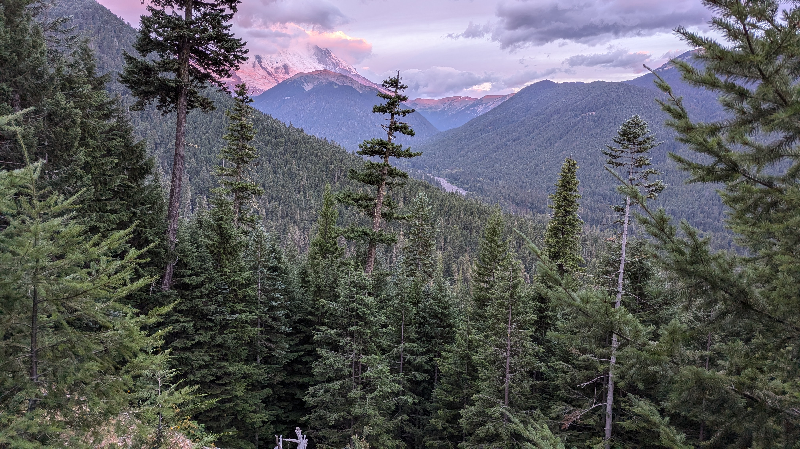
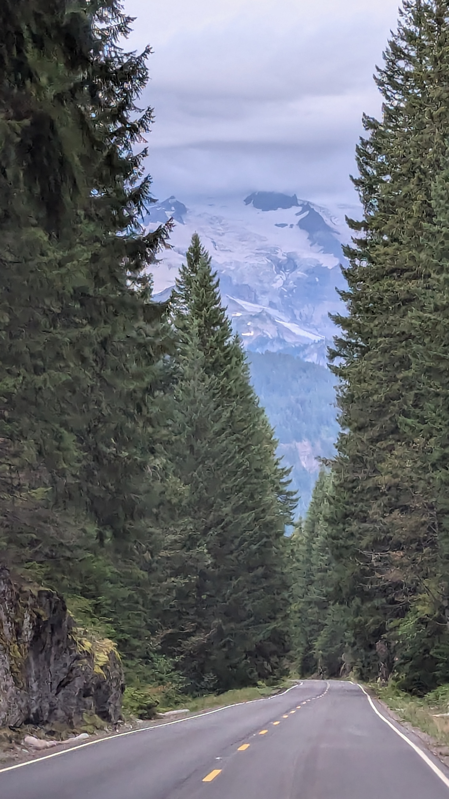
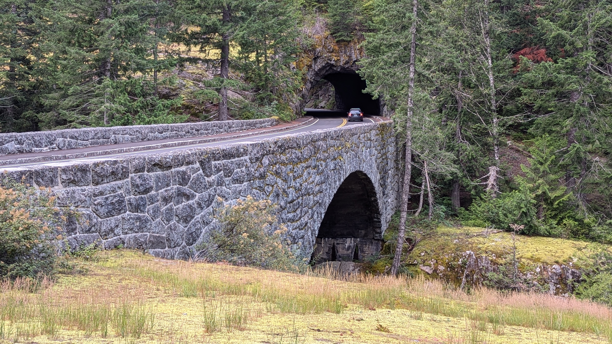
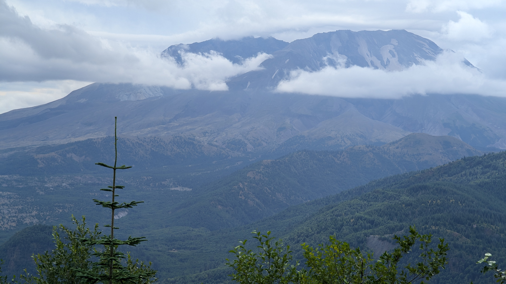
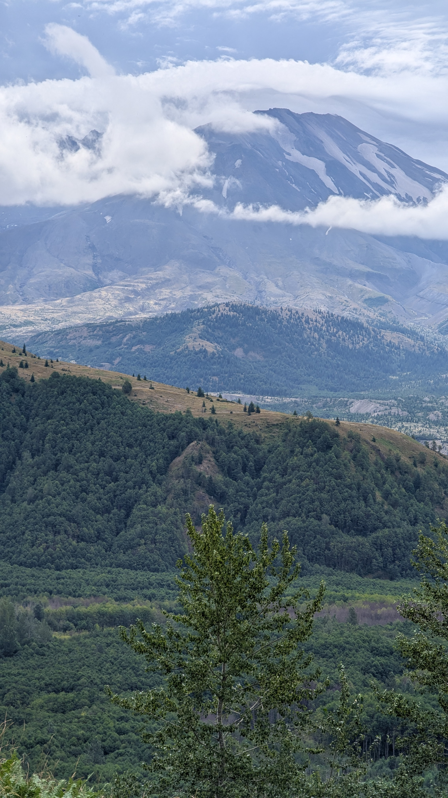

Ope...A Life
-5
Small write up on a visit to Mt. Rinaier and Mt. St. Helens from a previous iteration of this journal. Rather than integrate it into the current journal, I'm putting it here. I like it too much to leave it out but am too lazy to integrate it properly, so here it lays.
Mt. Rainier and Mt. St. Helens
#pnw
Mt. Rainier glowing pink in the sunrise.
Mt. Rainier glowing pink in the sunrise.
Mt. Rainier looking all moody and brooding.
Such a beautiful drive.
Nifty canyon.
Big Mt. Rainier. Little car. Can't see all of Rainier because of the clouds.
Mt. Rainier flowers.
Mt. St. Helens. There's a cloud moving into the crater from the eruption.
Mt. St. Helens commanding from a distance.
#pnw
Just a couple of notes since I never did a write up of the trip.
- We tried hitting Rainier from the south on forest roads. Some were closed due to storms so we had to make our way to I-5 and get there from the north instead. Saw a lot of beauty (until we hit I-5. I-5 is not pretty).
- Stayed at a funky ski hill named Crystal Mountain Resort. Great vibes.
- We had to leave earlier than we normally would have to be able to use the road to get to Mt. Rainier without an appointment. After something like 7am you need an appointment to use the road.
- We weren't able to get all the way to Mt. St. Helens due to a bridge washout.






